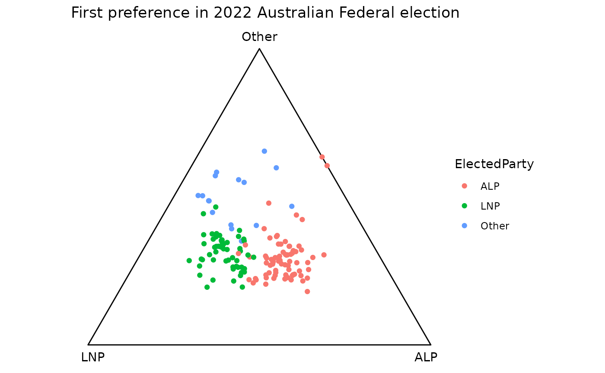
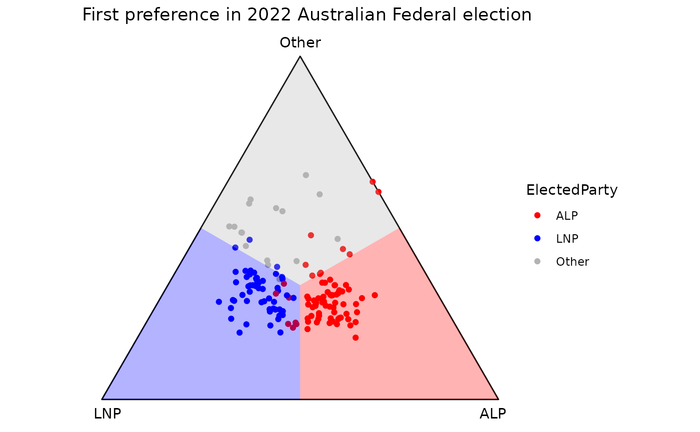
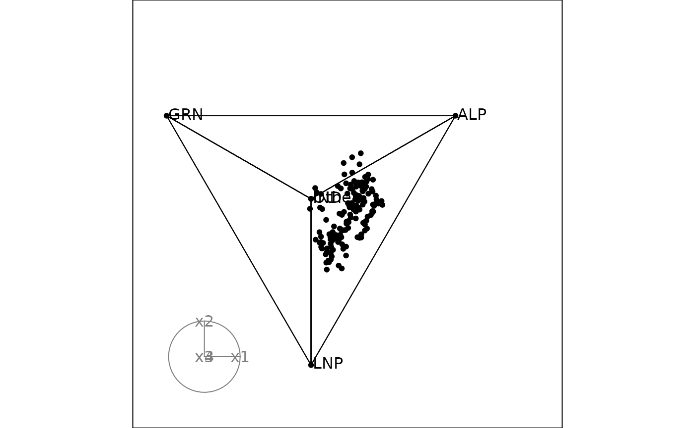
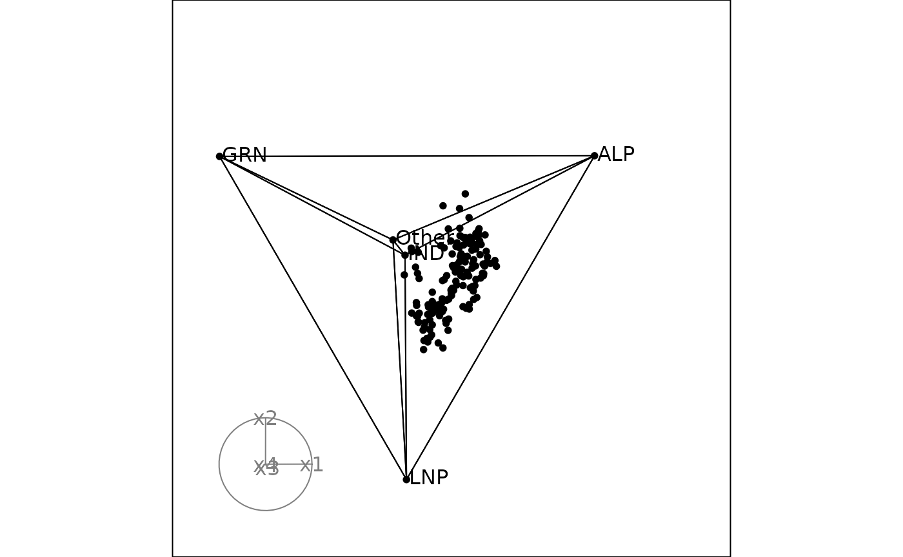
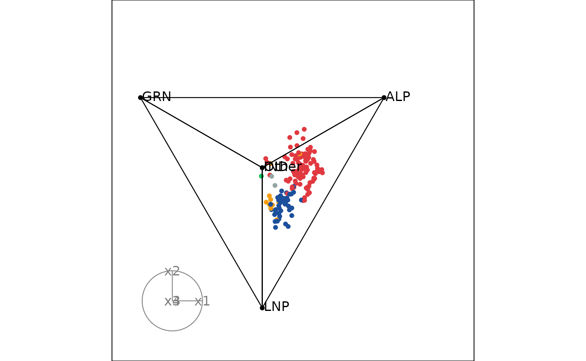

Using `ternable` object to draw ternary plots
draw_ternary_plot.RmdThis vignette shows you how to build a ternary plot on 2 and higher
dimensions, using the ternable object.
Both 2D and high-dimensional (HD) ternary plots require the following 3 components:
- Coordinates of the observations: Your n-part compositional data must be transformed into (n-1)-dimensional space via Helmert matrix.
- Vertices: The point coordinates that define the vertices of the simplex
- Edges: How the vertices are connected to create the simplex
You can access all these components conveniently via a
ternable object.
ternable object
ternable is a simple S3 object that contains all the
data and metadata useful for ternary plots, including the following
components:
-
data: Stores input data after being validated and normalized -
ternary_coord: Stores the coordinates for all observations. -
simplex_vertices: Stores the simplex vertices’ coordinates. -
simplex_edges: Stores the connections between the simplex vertices. -
items: Stores the item names in the order provided in the argumentitems.
To create a ternable object, simply call the function
ternable(). ternable() takes 2 arguments:
-
data: The input data, which must be in aternable-friendly format. For more details on how to transform your raw data into aternable-friendly format, please refer tovignette("transform_raw_data") -
items: The item names in the order you want them to appear in the ternary plot. The default takes all the columns indata.
aecdop22_transformed <- prefviz:::aecdop22_transformed
head(aecdop22_transformed)
#> # A tibble: 6 × 6
#> DivisionNm CountNumber ElectedParty ALP LNP Other
#> <chr> <dbl> <chr> <dbl> <dbl> <dbl>
#> 1 Adelaide 0 ALP 0.400 0.32 0.280
#> 2 Aston 0 LNP 0.325 0.430 0.244
#> 3 Ballarat 0 ALP 0.447 0.271 0.282
#> 4 Banks 0 LNP 0.353 0.452 0.195
#> 5 Barker 0 LNP 0.209 0.556 0.235
#> 6 Barton 0 ALP 0.504 0.262 0.234
tern22 <- ternable(data = aecdop22_transformed, items = ALP:Other)
tern22
#> Ternable object
#> ----------------
#> Items: ALP, LNP, Other
#> Vertices: 3
#> Edges: 6
ternable helpers - get_tern_*()
While ternable provides you with the essenstial
components for building a ternary plot, different plot types (2D or HD)
might require slightly different way of representing these commponents.
get_tern_*() functions help you do just that.
Under the hood, get_tern_*() perform simple data
transformations, i.e., rbind() and cbind(), to
help you create the input that are compatible with popular plotting
packages, i.e., ggplot2 for 2D ternary plot and
tourr for HD ternary plots.
There are 3 get_tern_*() functions:
-
get_tern_data(): Provides input data forggplot2ortourr. -
get_tern_edges(): Provides edges of the simplex, which is required bytourr. -
get_tern_labels(): Provides labels for the vertices, which is helpful for distinguishing vertices intourr.
Drawing a 2D ternary plot
Take the example of the 2022 Australian Federal Election, we would like to take a look at the first preference distribution between the 2 major parties: Labor and the Coalition, and other parties.
The dataset aecdop22_transformed is already in a
ternable-friendly format, so we can directly pass it to
ternable() to create a ternable object.
tern22 <- ternable(aecdop22_transformed, ALP:Other)Now we can use the get_tern_data() function to get the
input data for ggplot2.
input_df <- get_tern_data(tern22, plot_type = "2D")
head(input_df)
#> DivisionNm CountNumber ElectedParty ALP LNP Other x1
#> 1 Adelaide 0 ALP 0.3998 0.3200 0.2802 0.05642712
#> 2 Aston 0 LNP 0.3255 0.4305 0.2440 -0.07424621
#> 3 Ballarat 0 ALP 0.4474 0.2709 0.2817 0.12480435
#> 4 Banks 0 LNP 0.3526 0.4522 0.1952 -0.07042784
#> 5 Barker 0 LNP 0.2085 0.5563 0.2352 -0.24593174
#> 6 Barton 0 ALP 0.5043 0.2619 0.2338 0.17140268
#> x2
#> 1 -0.06507478
#> 2 -0.10941054
#> 3 -0.06323766
#> 4 -0.16917809
#> 5 -0.12018830
#> 6 -0.12190294The output is a data frame where the original columns are combined
with the coordinates (x1, x2). These
coordinate columns are the observation locations on the plot. We can now
use ggplot2 to draw the ternary plot.
p <- ggplot(input_df, aes(x = x1, y = x2)) +
# Draw the ternary space as an equilateral triangle
geom_ternary_cart() +
# Plot the observations as points
geom_point(aes(color = ElectedParty)) +
# Add vertex labels, taken from the ternable object
add_vertex_labels(tern22$simplex_vertices) +
labs(title = "First preference in 2022 Australian Federal election")
p
In an election, we would be interested in defining the regions where
one party takes the majority over others. We can do that using
geom_ternary_region().
This geom takes the barycentric coordinates of a reference point as input, and divides the ternary triangle into 3 regions based on the reference points. These regions are defined by the perpendicular projections of the reference point to the three edges of the triangle. The default reference point is the centroid, which divides the triangle into 3 equal regions.
p +
geom_ternary_region(
x1 = 1/3, x2 = 1/3, x3 = 1/3, # Default reference points. Must sum to 1
vertex_labels = tern22$vertex_labels, # Labels for the regions
aes(fill = after_stat(vertex_labels)),
alpha = 0.3, color = NA, show.legend = FALSE
) +
scale_fill_manual(
values = c("ALP" = "red", "LNP" = "blue", "Other" = "grey70"),
aesthetics = c("fill", "colour")
)
vertex_labels argument is used to specify the vertex of
which the region belongs to. This is helpful when you want to “sync” the
aesthetic mapping of geom_ternary_region() with the base
layer because you only need to specify the customization once.
Please note that the order in which the labels are provided must
match the order of the vertices in the ternary plot. The vertices are
listed clockwise, from the right (ALP) to the left (LNP), then ending at
the top of the triangle (Other). The best way is to get these labels
from ternable$alternatives as ternable
preserves the vertex orders.
Drawing a high-dimensional ternary plot
Take the example of the 2025 Australian Federal Election, we would
like to take a look at the first preference distribution between the 4
major groups: Labor, Coalition, Greens, Independents and the other
party. This can be conveniently done using the tourr
package, ternable object and the get_tern_*()
functions.
A ternary tour requires the following components:
- Coordinates of the observations and vertices
- Edges of the simplex
- Vertex labels (good to have to identify the vertices during the tour)
# Load the data
aecdop25_transformed <- prefviz:::aecdop25_transformed
head(aecdop25_transformed)
#> # A tibble: 6 × 8
#> DivisionNm CountNumber ElectedParty ALP GRN LNP Other IND
#> <chr> <dbl> <chr> <dbl> <dbl> <dbl> <dbl> <dbl>
#> 1 Adelaide 0 ALP 0.465 0.190 0.242 0.104 0
#> 2 Aston 0 ALP 0.373 0 0.377 0.209 0.0414
#> 3 Ballarat 0 ALP 0.424 0 0.286 0.262 0.0281
#> 4 Banks 0 ALP 0.364 0.119 0.391 0.106 0.0202
#> 5 Barker 0 LNP 0.225 0.0816 0.5 0.135 0.0586
#> 6 Barton 0 ALP 0.471 0.159 0.242 0.128 0
tern25 <- ternable(aecdop25_transformed, ALP:IND)
# Animate the tour
animate_xy(
get_tern_data(tern25, plot_type = "HD"), # Dataframe with coordinates of the observations and vertices
edges = get_tern_edges(tern25), # Edges of the simplex
obs_labels = get_tern_labels(tern25), # Labels for the vertices
axes = "bottomleft"
)
We can add colors to the points.
# Define color mapping
party_colors <- c(
"ALP" = "#E13940", # Red
"LNP" = "#1C4F9C", # Blue
"GRN" = "#10C25B", # Green
"IND" = "#F39C12", # Orange
"Other" = "#95A5A6" # Gray
)
# Map to your data (assuming your column is called elected_party)
color_vector <- c(rep("black", 5),
party_colors[aecdop25_transformed$ElectedParty])
# Animate the tour
animate_xy(
get_tern_data(tern25, plot_type = "HD"),
edges = get_tern_edges(tern25),
obs_labels = get_tern_labels(tern25),
col = color_vector,
axes = "bottomleft"
)